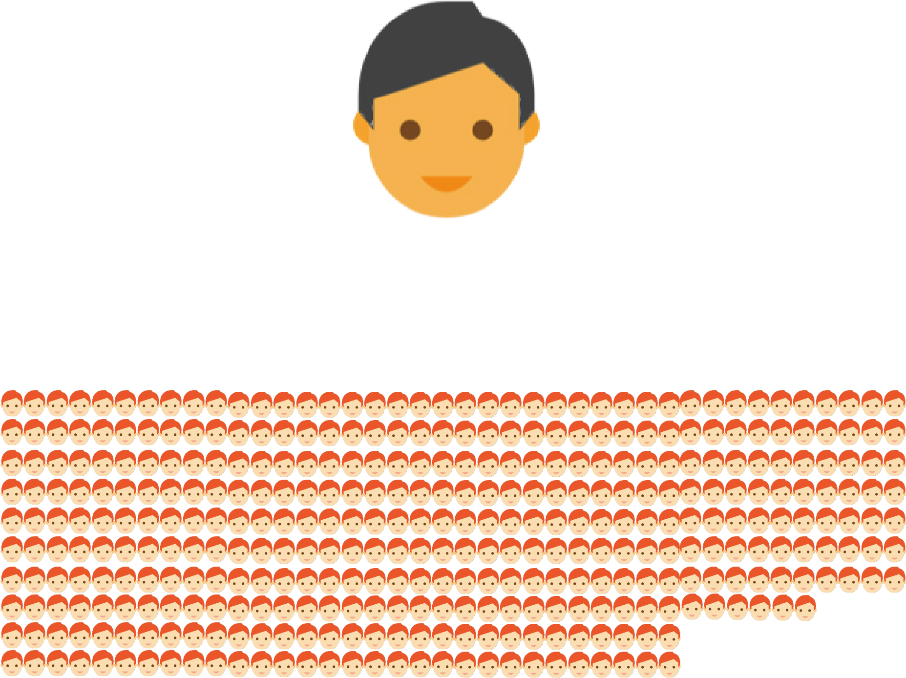
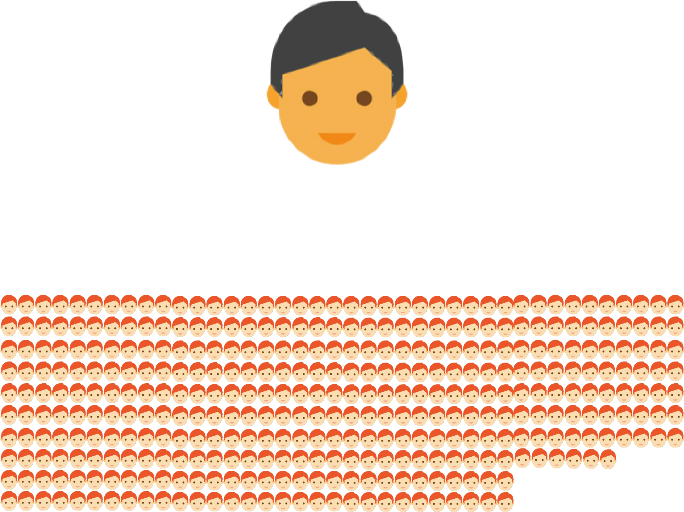
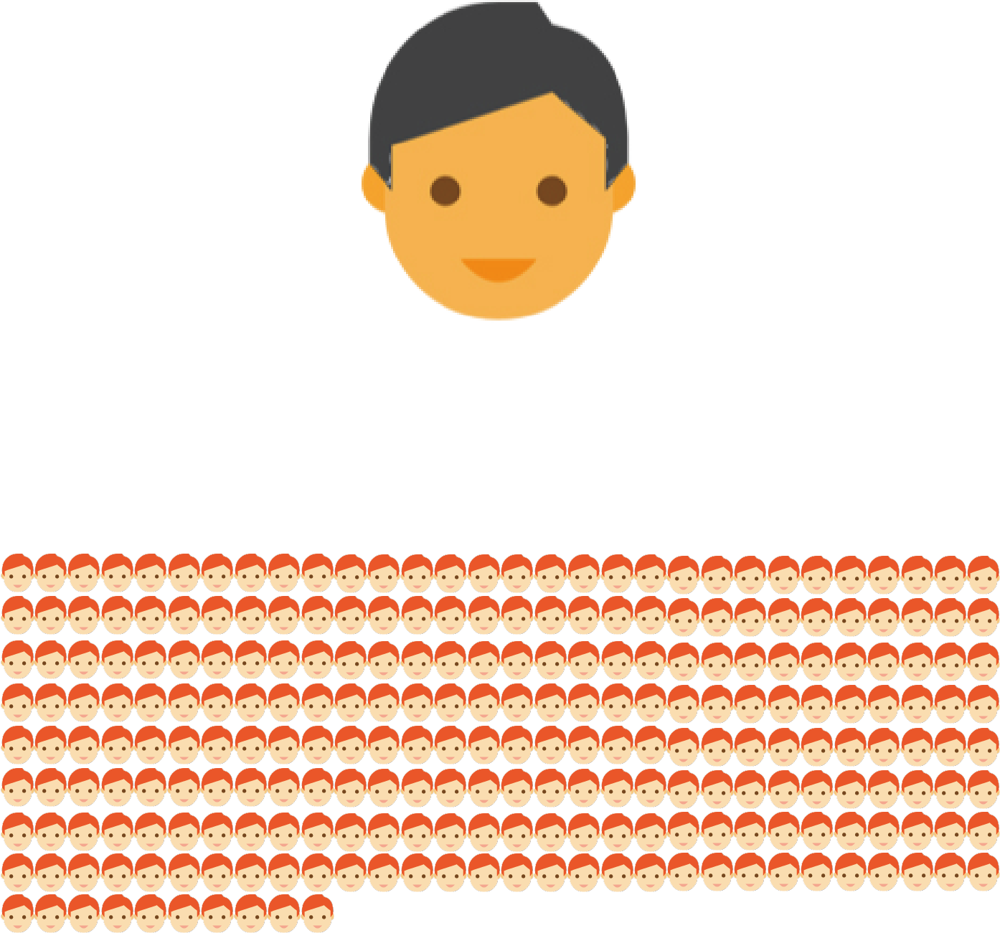
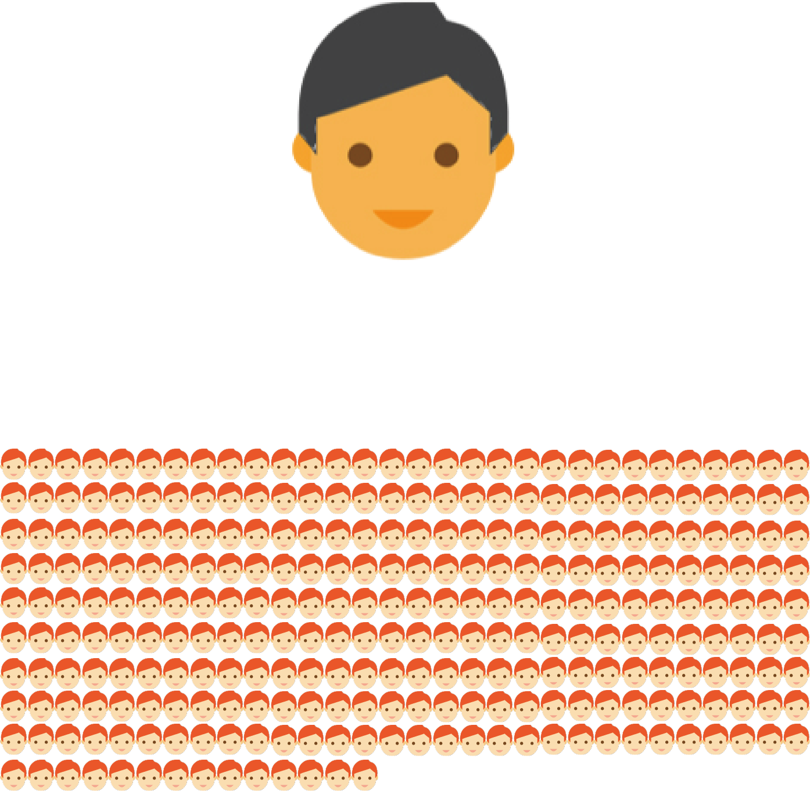

Budget 2019/20: Government increases amount of professional school social workers
Reported by Cara Li, Oasis Li & Wallis Wang
Edited by Katherine Li
Graphics by Alec Gu & Rhona Lyu
The government will ensure at least two social workers in all secondary schools across Hong Kong starting this year, announced Financial Secretary Paul Chan Mo-po in the budget speech today. This comes after an alarming increase in student suicide rates
and teenage mental illness.
This “two school social workers for each school” policy will involve an annual recurring expenditure of $310 million and will be implemented in more than 460 secondary schools.
Mr. Chan said in the budget speech that the objective of this policy is “to enhance teenagers’ mental health and stress resilience”.
Currently, middle schools in Hong Kong are administering the “one school social worker for each school” policy, which was introduced to all secondary schools in 2000.
But statistics and surveys show that the mental health assistance currently offered to secondary school students is far from adequate.
 

 
Based on a statement from the Food and Health Bureau, more and more teenagers and even pre-teens have been diagnosed with mental illness in recent years. The number of cases has risen from 18,900 in 2012 to 28,800 in 2016
— an increase of more than 50% in five years.
The juvenile suicide rate in Hong Kong also rose rapidly. HKJC Centre for Suicide Research and Prevention from Hong Kong University estimated that the suicide rate has increased by 76.1% from 2012 to 2016, while the suicide
cases of full-time students have risen by 52.6%.
“Allocating more social workers to schools definitely can help to provide early detection and intervention to students who might be in distress or have high risks of mental health issues,” said Frances Law Yik-wa, associate
professor at Hong Kong University and Project Director of CSRP, who responded positively towards the government’s new policy.
However, while the government’s efforts are appreciated, local social worker Emy Law Yee-ming who is also a member of the Reclaiming Social Work Movement expressed her concerns towards this policy change.
“I am concerned about the workload of the social workers and also if the schools have enough resources to assist their work,” said Ms. Law. “If the number of school social workers are doubled, will the number of supervisors
who provide help to students also be doubled?”
She also said that helping students should always be prioritised before meeting the working quota.
“For example, one social worker has to deal with 70 cases annually. After adding one more social worker, I am afraid that they are going to double the case quota as well. But the point is, more actual space and time should
be provided to lend students a helping hand,” said Ms. Law.
Her concerns are also echoed by Paul Wong Wai-ching, associate professor at the University of Hong Kong and former national representative of the International Association for Suicide Prevention.
“Serving one student actually means serving a whole family. If you are helping one student, you are helping three people — the student and his or her parents,” said Dr. Wong.
To alleviate the stress placed on social workers, both Dr. Wong and Ms. Law agreed that professionals besides social workers can help to diminish students’ mental health problems.
Dr. Wong suggested that the government should start recognising counsellors’ qualification and hire them as well. He pointed out that there are people who took counselling courses but do not have psychology backgrounds, and
that many countries around the world recognise these counsellors.
Dr. Wong’s said parents and peers play important roles in mental health as well.
“Young people often seek help from peers rather than professionals. Students themselves can be trained up to help their peers, for example, taking up a post an an ambassador at school,” he said.
“We expect the government will continue to provide resources to empower schools in strengthening their curriculum in this aspect,” said Dr. Law.